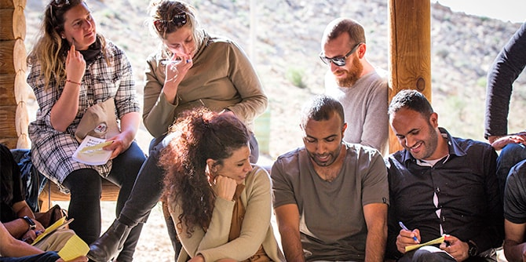
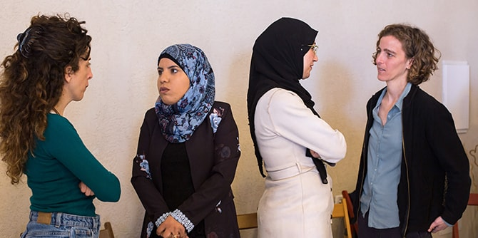

עמיתי תוכנית מנדל למנהיגות אזורית אילת-אילות, תוכנית מנדל למנהיגות אזורית כסייפה וערערה-בנגב ותוכנית מנדל למנהיגות תרבות בנגב, התכנסו ליום למידה משותף במצפה רמון. המפגש נועד להיכרות בין עמיתי התוכניות הפועלות השנה, וליצירת הזדמנות לחיבורים ולשיח משותף על שאלות מנהיגותיות מקומיות, כתשתית לחיזוקה של קהילת עמיתים הפועלת לחולל שינויים איכותיים במגוון קהילות הנגב.
יום הלמידה התקיים במצפה רמון, המהווה מקרה בוחן לחשיבה על סוגיות מקומיות של חינוך, תיירות וסביבה, תרבות, קהילה ורווחה. בידודה הגאוגרפי ודירוגה הסוציואקונומי של מצפה רמון מחייב אותה לפעול ולצמוח בתוך ריבוי אתגרים. בשנים האחרונות צומחת ביישוב זה מנהיגות השואפת ליצור, לחדש ולהשפיע לטובה על המקום, תוך קליטת משפחות צעירות, אמנים ויזמים המוצאים בו מקום של השראה והתפתחות.

בפתיחת היום ציטטה ד"ר עדי ניר שגיא, מנהלת המרכז, את חוקר המנהיגות פרופ' אלכסנדר האסלם, המדגיש במחקריו את ההיבט הקבוצתי שבו יחיד משפיע על חברי קבוצתו במטרה להשיג מטרות מבוססות חזון חברתי. לדבריו, זהות חברתית של "אנחנו" עוצמתית ומחוללת שינוי; וכך – כאן – ה"אנחנו" הוא כלל עמיתי תוכניות מרכז מנדל למנהיגות בנגב, השואפים לשפר יחד את איכות החיים בנגב.
המפגש נמשך בסדנה בהובלת
פרופ' סמדר בן אשר, שמטרתה היכרות בין קבוצות העמיתים דרך רקימת סיפור מסגרת משותף המבוסס על שילוב סיפורי חיים אישיים שבחר כל עמית לשתף עם הכלל. לאחר מכן נפגשו העמיתים עם ראש המועצה המקומית מצפה רמון,
רוני מרום, שהציג את העשייה שהוא מוביל ביישוב ואת החזון שלאורו הוא פועל במבט לשנים הבאות. ראש המועצה שיתף בחזון עירוני של הפיכת מצפה רמון למרחב השראה הנשען על ערכי חלוציות ויצירתיות, בשאיפה לשיפור איכות החיים של התושבים וכאבן שואבת לאוכלוסיות חדשות.

בהמשך היום סיירו העמיתים ולמדו בארבע קבוצות חקר במטרה להכיר את מגוון היוזמות ואת העשייה הייחודית המתרחשת במצפה רמון, בהובלת יזמים ואנשי מעשה מקומיים. קבוצות החקר התמקדו בתחומי חינוך, תרבות, תיירות, סביבה ועסקים חברתיים. הקבוצות נפגשו עם
זיו ספקטור, יזם ואיש חינוך, מקים ומנהל החאן האקולוגי "צל מדבר"; עם
אדר מעיין שטרן, פעילה חברתית העוסקת בסביבה, כלכלה מקומית וקיימות; ועם
מושיק וולף, מנהל מכינת "אשר רוח בו" לבני נוער. אחת הקבוצות עסקה בנושא תרבות ונפגשה עם
שירי בר און, מנהלת ה"סינמכתש" ועמיתה בתוכנית מנדל למנהיגות תרבות בנגב. קבוצה זו פגשה גם את
אהוד אטון, שמוביל לימודי מוזיקה ביישוב. דרך הסיורים התחקתה כל קבוצה אחר המורכבות הכרוכה בהובלת שינוי בתנאים מרובי אתגרים של יישוב קטן ומרוחק גאוגרפית.
בסיום היום התכנסו העמיתים לסדנת ריקוד חווייתית ביער בפאתי מצפה רמון, ולמפגש עיבוד לסיכום יום הלמידה בהובלת עמיתי התוכניות.
{kind=link}
{kind=link}
{kind=link}